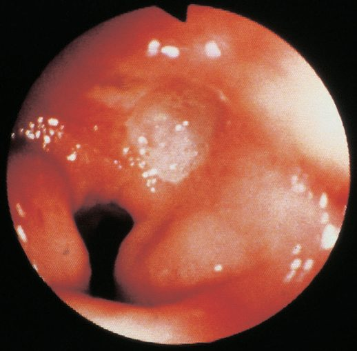
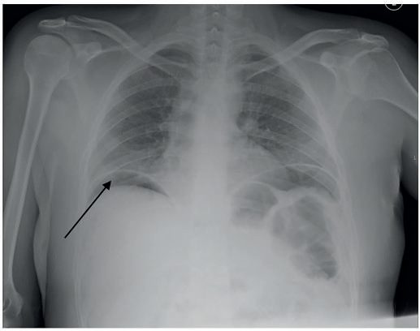
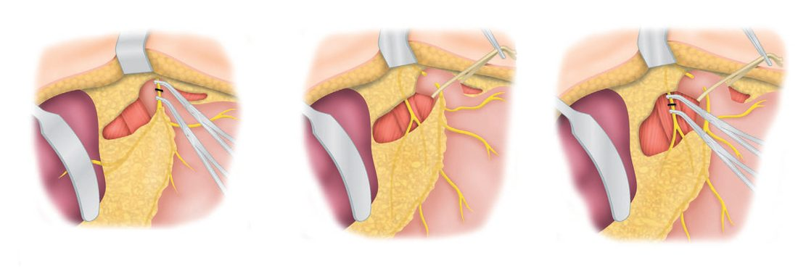
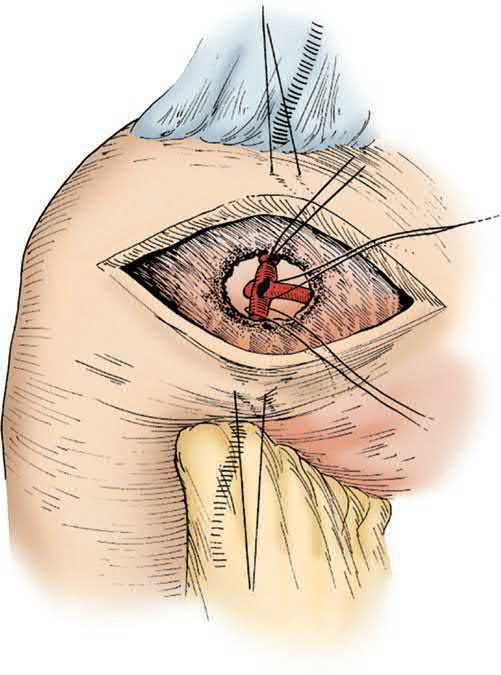

Peptic Ulcer Disease
Summary
- Peptic ulcers are erosions of the gastric or duodenal mucosa that extend through the muscularis mucosae, most commonly caused by Helicobacter pylori infection or NSAID use [1].
- Although the name suggests an association with pepsin, in the absence of acid peptic ulcers do not occur, and nearly all can be healed with proton pump inhibitors [2].
- Global incidence and prevalence have declined substantially in recent decades owing to better understanding of H. pylori pathogenesis and NSAID risk, and elective surgery for uncomplicated disease is now rare, with surgical treatment reserved chiefly for complications, bleeding, perforation, and obstruction [1][2].
Definition
A peptic ulcer is a breach in the gastric or duodenal mucosa that extends through the muscularis mucosa into the deeper layers of the wall [3]. Common sites are the first part of the duodenum and the lesser curve of the stomach, but ulcers also occur at a gastric stoma after surgery, in the oesophagus, and in a Meckel's diverticulum containing ectopic gastric epithelium; they occur at a junction between different epithelial types, in the epithelium least resistant to acid damage [2].
Pathophysiology
- Peptic ulcers arise from decreased protective (defensive) factors, mucosal bicarbonate secretion, mucus production, mucosal blood flow, growth factors, cell renewal, endogenous prostaglandins (or increased damaging (aggressive) factors) hydrochloric acid, pepsins, ethanol, smoking, duodenal bile reflux, ischemia, NSAIDs, and especially H. pylori infection [1]. H. pylori is a spiral-shaped, flagellate, microaerophilic gram-negative bacterium that resides within/beneath the gastric mucus layer; it produces urease, splitting urea into ammonia and bicarbonate to create a protective alkaline microenvironment, and causes injury via toxic products (ammonia, cytotoxins, mucinase, phospholipases, platelet-activating factor), local mucosal immune activation, altered gastrin levels/acid secretion, and gastric metaplasia in the duodenum that permits bacterial colonization there [1].
- CagA- and VacA-positive H. pylori strains induce more inflammation, and CagA-positive strains are associated with gastric adenocarcinoma [1].
- NSAIDs inhibit cyclooxygenase enzymes, reducing prostaglandin-mediated mucosal protection (mucin/bicarbonate secretion, mucosal blood flow, epithelial proliferation), and independently increase PUD risk three- to four-fold, more often producing gastric ulcers [1].
- Anterior duodenal ulcers tend to perforate, while posterior duodenal ulcers tend to bleed, sometimes by eroding into the gastroduodenal artery [2][4].
- Chronic gastric ulcers may erode posteriorly into the pancreas or major vessels (e.g., splenic artery), and fibrosis can cause an "hourglass" deformity of the stomach [2].
Clinical features
- Duodenal ulcer pain is typically well-localized mid-epigastric pain, generally tolerable, often relieved by food; when it becomes constant this suggests deeper penetration, and radiation to the back suggests pancreatic penetration, while diffuse peritoneal irritation indicates free perforation [1].
- Gastric ulcer pain is often precipitated rather than relieved by food, with associated weight loss and anorexia, and is less cyclical than duodenal ulcer pain [3].
- Epigastric pain, often described as gnawing and sometimes radiating to the back, is characteristic of both, with symptoms typically intermittent and periodic in relation to spontaneous ulcer healing [2].
- Vomiting is not a notable feature unless outlet obstruction has occurred; weight loss or gain, chronic bleeding presenting as microcytic anaemia, and epigastric tenderness on examination may be found [2].
- Vomiting and upper abdominal distension suggest gastric outlet obstruction from pyloric scarring [3].
- Perforated peptic ulcer classically presents with sudden-onset severe generalized abdominal pain, board-like abdominal rigidity, and a patient disinclined to move; tachycardia and shock appear early, pyrexia later, though elderly patients on steroids may present atypically without classic rigidity [2].
- Gastric outlet obstruction presents with early satiety, anorexia, weight loss, nausea, and vomiting, with prolonged vomiting leading to a hypochloremic, hypokalemic metabolic alkalosis [1][4].
Etiology
- H. pylori infection and NSAID use are the two predominant causes of PUD; other, less common causes include Zollinger-Ellison syndrome (gastrinoma), other medications, infections, radiation therapy, and gastric bypass surgery [1]. H. pylori is associated with about 90% of duodenal ulcers and 70–90% of gastric ulcers, and its global prevalence is around 43%, down from 58% in the 1980s; roughly 80% of infected people are asymptomatic [1].
- Cigarette smoking predisposes to peptic ulceration and increases relapse after treatment [2].
- Zollinger-Ellison syndrome (gastrinoma) causes ulceration through gastric acid hypersecretion and should be suspected in H. pylori-negative, non-NSAID, refractory, or atypically located ulcer disease [3][4].
- The most accurate diagnostic test for ZES is the secretin stimulation test, with an increase in serum gastrin of ≥200 pg/mL after IV secretin suggestive of gastrinoma; roughly 80% of primary gastrinomas are found within the "gastrinoma triangle" [5].
- Duodenal ulcers are more common in men (up to 5:1) with peak incidence at 25–30 years; gastric ulcers show a milder male predominance (3:1) with a peak incidence around age 50 [3].
Diagnosis
- Flexible upper endoscopy is the most reliable diagnostic method for both gastric and duodenal ulcers, allowing biopsy for malignancy and H. pylori testing [1].
- All gastric ulcers should be regarded as potentially malignant regardless of appearance, and multiple biopsies (as many as 10) should be taken before an ulcer is accepted as benign; a single biopsy has only 70% sensitivity for detecting gastric cancer, four biopsies increase yield to 95%, and seven to 98% [1][2].
- Invasive H. pylori tests include rapid urease assay (sensitivity 84–95%, specificity 95–100%), histology (~95% sensitivity, 99% specificity, most accurate even with PPI use), and culture (80% sensitivity, 100% specificity, allows antibiotic sensitivity testing) [1].
- Noninvasive tests include the urea breath test and stool antigen test (both >95% sensitivity/specificity, preferred for confirming eradication), and serology (variable accuracy, cannot distinguish active from past infection) [1][4].
- A serum gastrin level should be obtained in patients with ulcers refractory to medical therapy or requiring surgery, to rule out gastrinoma [1].
- Upper GI radiography can detect ulcer craters (50% with single contrast, 80–90% with double contrast) but has largely been replaced by endoscopy [1].


Scoring and Severity
- The modified Johnson anatomic classification of gastric ulcers (types I–V) is still used to guide surgical treatment despite predating modern understanding of H. pylori/NSAID etiology: Type I (lesser curve at the incisura (50–60% of cases, low-to-normal acid, most common); Type II) gastric body with a coexisting duodenal ulcer (15–20%, increased acid); Type III (prepyloric (~20%, increased acid, behaves like duodenal ulcer); Type IV) high on the lesser curve near the GE junction (<10%, normal acid); Type V, anywhere, associated with long-term NSAID use, normal acid [1][3][4].
- The Forrest classification stratifies endoscopic stigmata of recent hemorrhage and predicts rebleeding risk: Forrest IA active spurting (90% rebleed risk), IB active oozing (10–20%), IIA nonbleeding visible vessel (50%), IIB adherent clot (25–30%), IIC flat pigmented spot (5–10%), and III clean-based ulcer (3–5%) [1][3].
- The Rockall score, though generalized to all causes of upper GI bleeding rather than PUD specifically, incorporates age, shock, comorbidity, endoscopic diagnosis, and endoscopic stigmata to predict rebleeding and death [2].
Treatment and Management
- Medical management is the mainstay: eradication therapy is curative when H. pylori is the principal factor, with reinfection uncommon in adults, and is more economical and safer than surgery [2].
- First-line H. pylori regimens include clarithromycin triple therapy (PPI, clarithromycin, amoxicillin) or bismuth quadruple therapy (PPI, bismuth, tetracycline, metronidazole), with bismuth quadruple therapy preferred where macrolide resistance risk (prior macrolide exposure or local clarithromycin resistance >15%) or penicillin allergy is present; treatment courses run 10–14 days [1].
- PPIs heal 85% of ulcers at 4 weeks and 96% at 8 weeks, more effectively and rapidly than H2-receptor antagonists [1].
- Antacids and sucralfate have a more limited, largely historical role [1].
- Refractory PUD (failure to heal after 8–12 weeks of PPI therapy) occurs in 5–10% of patients and should prompt evaluation for persistent H. pylori infection, ongoing NSAID use, malignancy, or gastrinoma [1].
- For bleeding ulcers, initial management is resuscitation, IV PPI, and urgent endoscopy (within 24 hours) with endoscopic hemostasis (adrenaline injection plus heater probe and/or clips) achieving control in ~70% of cases [1][2].
- Angiographic embolization is an option for rebleeding or when endoscopy fails; a randomized trial found no significant difference in rebleeding between prophylactic embolization and standard treatment [1].
- Surgical indications for duodenal ulcer include perforation, bleeding uncontrolled by endoscopy, obstruction, and intractability despite medical therapy; inability to exclude cancer is an indication for gastric ulcers [4].
- Patients on long-term NSAIDs or with a history of ulcer complications should be considered for lifelong maintenance PPI therapy [2][5].
Surgeries
- There is now essentially no role for elective acid-reducing surgery in routine PUD management; gastrectomy-based procedures are occasionally still required emergently [2]. Perforation: the perforation is typically approached via upper midline laparotomy or laparoscopically; small (<2 cm) perforations are closed primarily with an omental (Graham) patch, while larger or friable perforations are covered with a "tongue" of omentum secured over the defect without primary closure per Graham's original description [1][4].
- Laparoscopic omental patch repair is associated with less postoperative pain and fewer wound infections than open repair with equivalent leak rates and mortality [1].
- Very large duodenal perforations may require pyloric exclusion with gastrojejunostomy, or antrectomy with Billroth II/Roux-en-Y reconstruction [1]. Bleeding: for a bleeding duodenal ulcer, the duodenum is mobilized with a Kocher maneuver, opened longitudinally through the pylorus, and the gastroduodenal artery is oversewn with a three-point U-stitch (superior, inferior, and a transverse pancreatic branch stitch), taking care to avoid the common bile duct; the duodenotomy is closed transversely as a pyloroplasty [1][4].
- Bleeding gastric ulcers are managed by opening the stomach anteriorly, under-running the bleeding vessel, and considering local excision or biopsy to exclude malignancy; gastrectomy for bleeding carries high perioperative mortality [2]. Obstruction: managed by gastric decompression and correction of electrolytes first; surgery (when needed) is primary antrectomy with vagotomy, or vagotomy with a drainage procedure (Jaboulay gastroduodenostomy or gastrojejunostomy) if there is significant duodenal scarring [1]. Acid-reducing operations: Truncal vagotomy (division of vagal trunks above the hepatic/celiac branches) reduces peak acid output by 50–70% but requires a drainage procedure (Heineke-Mikulicz pyloroplasty, Finney pyloroplasty, Jaboulay gastroduodenostomy, or gastrojejunostomy) because of resultant pyloric dysfunction [1][2].
- Highly selective (parietal cell) vagotomy denervates only the parietal cell mass, preserving antropyloric innervation and avoiding the need for a drainage procedure, with the lowest morbidity (<5% significant side effects, <0.2% mortality) but higher recurrence (2–10%) [2][4].
- Truncal vagotomy and antrectomy gives the lowest recurrence rate (~1%) but higher morbidity/mortality [2][4].
- Gastrectomy reconstructions include Billroth I (gastroduodenostomy), Billroth II/Pólya (gastrojejunostomy with duodenal stump closure), and Roux-en-Y gastrojejunostomy, the last being preferred after antrectomy for reducing bile reflux and dumping, though it is discouraged as a routine reconstruction after antrectomy alone given the risk of marginal ulceration with a large gastric remnant [2][4][5].


Complications
- The common complications of peptic ulcer are perforation, bleeding, and stenosis (gastric outlet obstruction) [2].
- PUD is the most common cause of upper GI bleeding (35–50% of cases), with bleeding occurring in 15–20% of PUD patients; NSAID use is the predominant risk factor [1].
- Perforation occurs at roughly one-sixth the incidence of bleeding but has the highest mortality of any ulcer complication, reported as high as 30% [1].
- Gastrojejunal-colic fistula is a rare complication of prior gastrojejunostomy in which an anastomotic ulcer penetrates the transverse colon, causing severe diarrhoea, foul breath, faecal vomiting, and rapid weight loss/dehydration [2].
- Sequelae of peptic ulcer surgery affect roughly 30% of patients to some degree (5% intractable), including recurrent ulceration, small stomach syndrome, bile vomiting, early and late dumping syndrome, postvagotomy diarrhoea, malignant transformation (after ≥10 years, linked to bile reflux gastritis and intestinal metaplasia; not seen after highly selective vagotomy), nutritional deficiencies (iron, vitamin B12, bone disease), and gallstones from vagal denervation of the biliary tree [2].
- Early dumping (5–10% incidence) causes abdominal/vasomotor symptoms from rapid osmotic fluid shift within 30 minutes of eating; late dumping (~5%) is due to reactive hypoglycaemia roughly 2 hours after a meal; both are managed with dietary modification and octreotide, with revisional surgery occasionally needed [2][4].
Prognosis
- The incidence and prevalence of PUD have decreased worldwide by roughly 31% between 1990 and 2019 per the Global Burden of Disease study, with corresponding declines in hospitalization and mortality attributable to improved understanding of H. pylori and NSAID risk [1].
- Eradication of H. pylori reduces ulcer recurrence to about 2%, with initial healing rates around 90%, though eradication success after a first course of therapy has been falling (70–80%) due to rising antibiotic resistance [1].
- Surgery for bleeding peptic ulcer carries a mortality of about 20% in the modern era, reflecting a highly selected, higher-risk surgical population now that most bleeding is controlled endoscopically or medically [5].
- Recurrent ulceration rates vary by operation: gastrectomy 1–4%, truncal vagotomy and drainage 2–7%, highly selective vagotomy 2–10%, truncal vagotomy and antrectomy about 1% [2].
References
- Sabiston Textbook of Surgery, 22nd ed., Ch. 86, Stomach
- Bailey & Love's Short Practice of Surgery, 28th ed., Ch. 67, The stomach and duodenum
- Oxford Handbook of Clinical Surgery, 5th ed., Ch. 8, Upper gastrointestinal surgery
- The ABSITE Review, 2022, Ch. Stomach, best test for eradication is the urea breath test
- Schwartz's Principles of Surgery: ABSITE and Board Review, Ch. 26, Stomach
- Bailey & Love's Short Practice of Surgery, 28th ed., Ch. 8
- Maingot's Abdominal Operations, 13th ed., Ch. 17